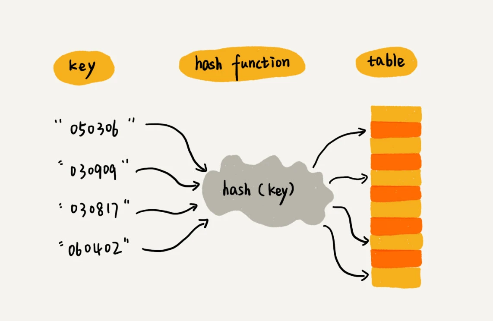
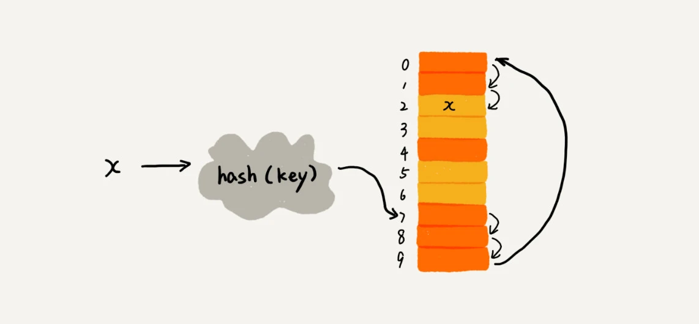
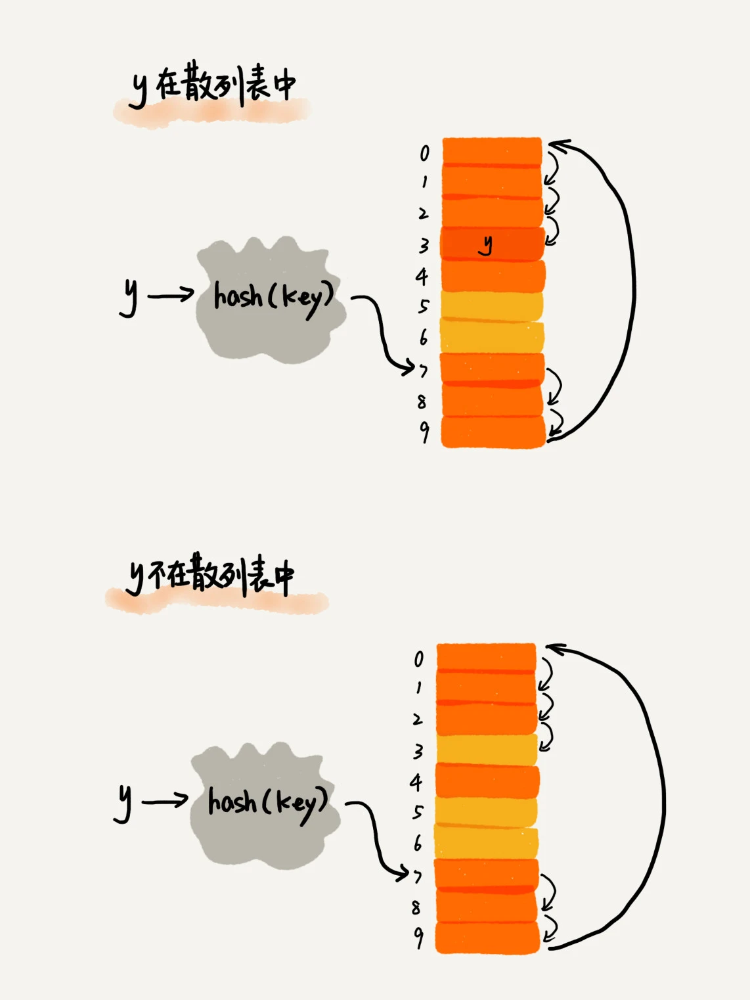
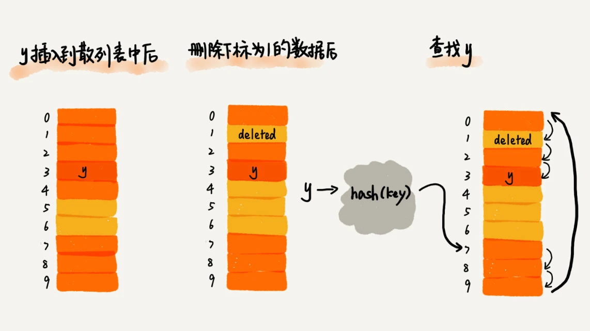
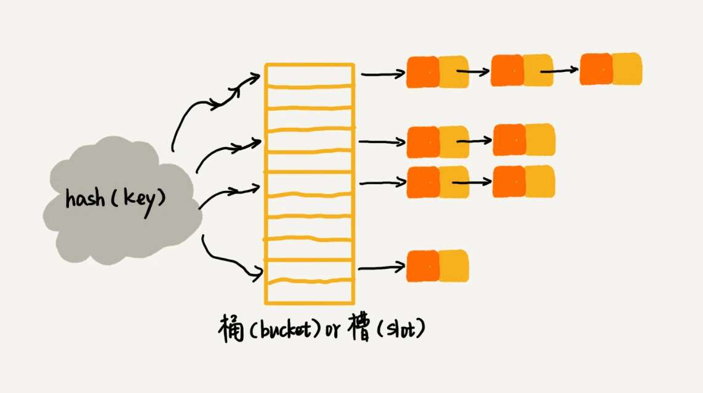

散列思想
散列表（Hash Table），平时也叫“哈希表”或者“Hash 表”。
散列表用的是数组支持按照下标随机访问数据的特性，所以散列表其实就是数组的一种扩展，由数组演化而来。可以说，如果没有数组，就没有散列表。
示例：
假如有 89 名选手参加学校运动会。为了方便记录成绩，每个选手胸前都会贴上自己的参赛号码，比如051167，其中，前两位 05 表示年级，中间两位 11 表示班级，最后两位是选手的编号 1 到 89。可以截取参赛编号的后两位作为数组下标，来存取选手信息数据。当通过参赛编号查询选手信息的时候，取参赛编号的后两位，作为数组下标，来读取数组中的数据，时间复杂度就是 O(1)。
这就是典型的散列思想。其中，参赛选手的编号叫做键（key）或者关键字，用它来标识一个选手。把参赛编号转化为数组下标的映射方法就叫作散列函数（或“Hash 函数”“哈希函数”），而散列函数计算得到的值就叫作散列值（或“Hash 值”“哈希值”）。

规律：
散列表用的就是数组支持按照下标随机访问的时候，时间复杂度是 O(1) 的特性。通过散列函数把元素的键值映射为下标，然后将数据存储在数组中对应下标的位置。当按照键值查询元素时，用同样的散列函数，将键值转化数组下标，从对应的数组下标的位置取数据。散列函数
散列函数在散列表中起着非常关键的作用，可以把散列函数定义成 **hash(key)**，其中 key 表示元素的键值，hash(key) 的值表示经过散列函数计算得到的散列值。
示例中的散列函数如下：
function hash(key) { const n = key.length // 获取最后两位字符 const lastTwo = parseInt(key.substr(n - 2, n)) return lastTwo }复杂化：
如果参赛选手的编号是随机生成的 6 位数字，又或者用的是 a 到 z 之间的字符串，该如何构造散列函数呢？三点散列函数设计的基本要求
- 散列函数计算得到的散列值是一个非负整数
- 如果 key1 = key2，那 hash(key1) == hash(key2)
- 如果 key1 ≠ key2，那 hash(key1) ≠ hash(key2)
第三点理解：在真实的情况下，要想找到一个不同的 key 对应的散列值都不一样的散列函数，几乎是不可能的。即便像业界著名的MD5、SHA、CRC等哈希算法，也无法完全避免这种散列冲突。而且，因为数组的存储空间有限，也会加大散列冲突的概率。
几乎无法找到一个完美的无冲突的散列函数，即便能找到，付出的时间成本、计算成本也是很大的，所以针对散列冲突问题，需要通过其他途径来解决。
散列冲突
再好的散列函数也无法避免散列冲突。常用的散列冲突解决方法有两类，开放寻址法（open addressing）和链表法（chaining）。
1.开放寻址法
核心思想：
如果出现了散列冲突，就重新探测一个空闲位置，将其插入。那如何重新探测新的位置呢？先了解一个比较简单的探测方法，线性探测（Linear Probing）。当往散列表中插入数据时，如果某个数据经过散列函数散列之后，存储位置已经被占用了，就从当前位置开始，依次往后查找，看是否有空闲位置，直到找到为止。
示例图如下：黄色的色块表示空闲位置，橙色的色块表示已经存储了数据。

从图中可以看出，散列表的大小为 10，在元素 x 插入散列表之前，已经 6 个元素插入到散列表中。x 经过 Hash 算法之后，被散列到位置下标为 7 的位置，但是这个位置已经有数据了，所以就产生了冲突。先顺序地往后一个一个找，看有没有空闲的位置，遍历到尾部都没有找到空闲的位置；再从表头开始找，直到找到空闲位置 2，于是将其插入到这个位置。在散列表中查找元素的过程有点儿类似插入过程。通过散列函数求出要查找元素的键值对应的散列值，然后比较数组中下标为散列值的元素和要查找的元素。如果相等，则说明就是要找的元素；否则就顺序往后依次查找。如果遍历到数组中的空闲位置，还没有找到，就说明要查找的元素并没有在散列表中。

散列表跟数组一样，不仅支持插入、查找操作，还支持删除操作。对于使用线性探测法解决冲突的散列表，删除操作稍微有些特别,不能单纯地把要删除的元素设置为空。原因：在查找的时候，一旦通过线性探测方法，找到一个空闲位置，就可以认定散列表中不存在这个数据。但是，如果这个空闲位置是后来删除的，就会导致原来的查找算法失效。本来存在的数据，会被认定为不存在。
如何解决：可以将删除的元素，特殊标记为 deleted。当线性探测查找的时候，遇到标记为 deleted 的空间，并不是停下来，而是继续往下探测。

线性探测缺陷：线性探测法其实存在很大问题。当散列表中插入的数据越来越多时，散列冲突发生的可能性就会越来越大，空闲位置会越来越少，线性探测的时间就会越来越久。极端情况下，可能需要探测整个散列表，所以最坏情况下的时间复杂度为 O(n)。同理，在删除和查找时，也有可能会线性探测整张散列表，才能找到要查找或者删除的数据。对于开放寻址冲突解决方法，除了线性探测方法之外，还有另外两种比较经典的探测方法，二次探测（Quadratic probing）和双重散列（Double hashing）。
所谓二次探测，跟线性探测很像，线性探测每次探测的步长是 1，那它探测的下标序列就是 hash(key)+0，hash(key)+1，hash(key)+2……而二次探测探测的步长就变成了原来的“二次方”，也就是说，它探测的下标序列就是 hash(key)+0，hash(key)+12，hash(key)+22……
所谓双重散列，意思就是不仅要使用一个散列函数，而是使用一组散列函数 hash1(key)，hash2(key)，hash3(key)……先用第一个散列函数，如果计算得到的存储位置已经被占用，再用第二个散列函数，依次类推，直到找到空闲的存储位置。
不管采用哪种探测方法，当散列表中空闲位置不多的时候，散列冲突的概率就会大大提高。为了尽可能保证散列表的操作效率，一般情况下，会尽可能保证散列表中有一定比例的空闲槽位。用装载因子（load factor）来表示空位的多少。
计算公式：
散列表的装载因子=填入表中的元素个数/散列表的长度装载因子越大，说明空闲位置越少，冲突越多，散列表的性能会下降。
2.链表法
链表法是一种更加常用的散列冲突解决办法，相比开放寻址法要简单很多。如图所示，在散列表中，每个“桶（bucket）”或者“槽（slot）”会对应一条链表，所有散列值相同的元素都放到相同槽位对应的链表中。

当插入的时候，只需要通过散列函数计算出对应的散列槽位，将其插入到对应链表中即可，所以插入的时间复杂度是 O(1)。当查找、删除一个元素时，同样通过散列函数计算出对应的槽，然后遍历链表查找或者删除。那查找或删除操作的时间复杂度是多少呢？实际上，这两个操作的时间复杂度跟链表的长度 k 成正比，也就是 O(k)。对于散列比较均匀的散列函数来说，理论上讲，k=n/m，其中 n 表示散列中数据的个数，m 表示散列表中“槽”的个数。
思考题
Word 文档中单词拼写检查功能是如何实现的？
常用的英文单词有 20 万个左右，假设单词的平均长度是 10 个字母，平均一个单词占用 10 个字节的内存空间，那 20 万英文单词大约占 2MB 的存储空间，就算放大 10 倍也就是 20MB。对于现在的计算机来说，这个大小完全可以放在内存里面。所以可以用散列表来存储整个英文单词词典。
当用户输入某个英文单词时，拿用户输入的单词去散列表中查找。如果查到，则说明拼写正确；如果没有查到，则说明拼写可能有误，给予提示。借助散列表这种数据结构，就可以轻松实现快速判断是否存在拼写错误。


Previous
 算法-7.2 散列表(中)
算法-7.2 散列表(中)
2022-06-14
Next
 算法-6. 跳表
算法-6. 跳表
2022-05-10